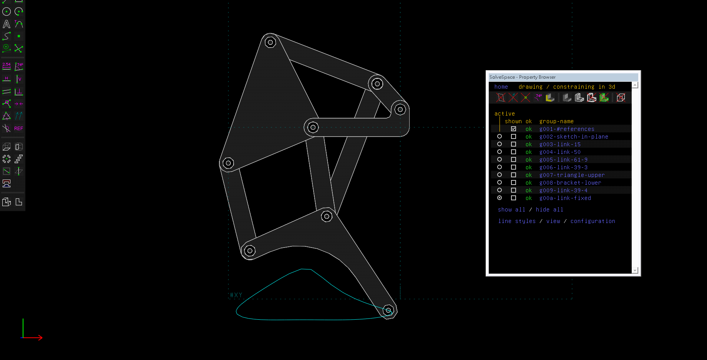
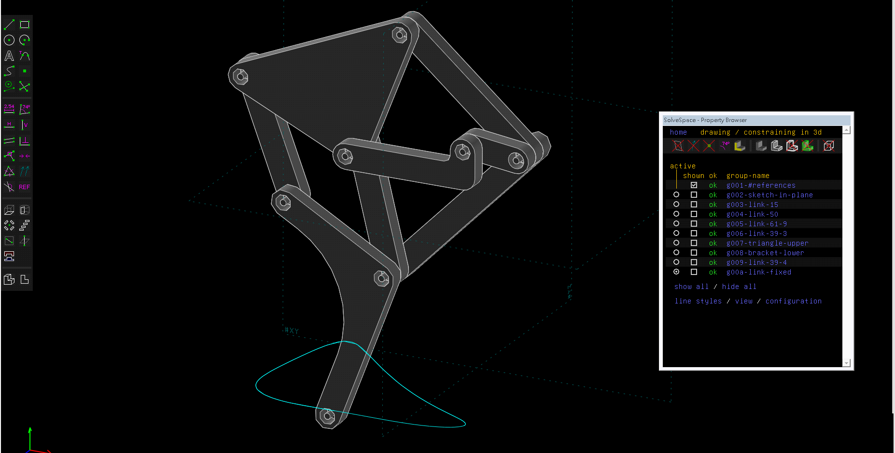
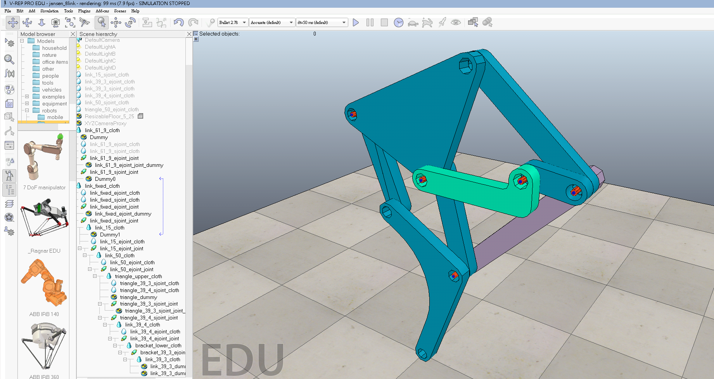

協同產品設計實習在銜接計算機程式、電腦輔助設計實習課程, 讓學員以分組協同的方式進行產品設計實習.
歷年協同產品設計實習課程
協同產品設計實習課程規劃
分組規劃: 每班自選組員, 分為 8 組, 每四組分配一台 8GB Ram/500GB HD 電腦作為廣域網路伺服器. 各組成員必須利用自建網站與 Github Pages 進行協同歷程簡報、網誌與操作流程影片 (分別放在 Youtube 與 Vimeo, 並冠上學員學號、系所名稱與課程名稱) 展示.
協同實習專案:
(一) 多連桿機構由 Solvespace 與 Onshape 完成組立後,
(二) 以程式套件取得特定點的迴轉軌跡後,
(三) 利用各組自行編寫的 Python3 + C 程式進行軌跡點座標進行驗證.
(四) 之後將各連桿機構 (包括單桿、四連桿與多連桿單一自由度系統) 轉入 V-rep 進行驅動模擬後,
(五) 轉由 remote API 模式, 以區域網路或廣域網路之 Python3 程式進行 V-rep 連桿機構之驅動模擬控制. 確定可以利用各連桿尺寸調控目標端點的迴轉路徑後,
(六) 接著在 Onshape 中, 以協同模式完成多連桿機構的細部組立設計後,
(七) 再根據多連桿機構的設計材料表, 進行備料, 此階段並導入 Arduino 直流馬達控制系統, 並以 Delta 3D Printer 印出多連桿系統的實體零件後, 進行多連桿機構系統的實體組立與運動控制.
(八) 最後, 每四組各自利用所完成的多連桿機構, 組成一四足行走機構, 在 V-rep 中完成運動模擬後, 每班所完成的兩具行走機構, 分別在 V-rep 虛擬環境與實體環境中進行運動模擬與行走測試.
協同產品設計實習評分標準:
(一) 各參與協同學員是否按步就班利用網際簡報、網誌與操作影片呈現細節內容 (50%) - 各組學員根據實際完成內容自評成績後 * 老師認可百分比
(二) 各組學員在產品設計實習過程是否互助砥礪完成既定工作任務 (分組成員互評) (20%) - 各組學員根據實際內容舉證互評成績平均, 參考系統: https://pygroup-ag100.rhcloud.com
(三) 上課出席與表現 (各學員根據實際內容舉證自評成績 * 老師認可百分比) (30%)
協同產品設計實習各週上課日期
2017 Spring 08:10-12:00 各週上課日期:
w1-2/22 2b (三) & 2/23 2a (四) - 請每人準備一個隨身碟, 下載可攜程式系統 (1GB). 接著請下載 Onshape_help.pdf (17.2 MB), 了解如何利用 Solvespace 與 Onshape 組立單軸旋轉連桿系統、四連桿系統與多連桿系統.
w2-3/1 2b (三) & 3/2 2a (四) - 每班分為八組, 每四組分配一台 8GB Ram/500GB HD 電腦作為 IPv4/IPv6 伺服器, 了解如何利用 IPv4 與 IPv6 網路連線傳輸設計檔案. 各組 CMSimfly 區域網站的應用. 各組以協同模式完成Solvespace 與 Onshape 單軸旋轉連桿系統與四連桿系統.
w3-3/8 2b (三) & 3/9 2a (四) - 各組以協同模式完成 Solvespace 與 Onshape 之 多連桿系統組立. 各組完成廣域網路與 Github Pages 網頁與簡報呈現各組學員與分組協同工作流程細節.
w4-3/15 2b (三) & 3/14 2a (四) - 單連桿與四連桿機構轉入 V-rep 進行運動模擬
w5-3/22 2b (三) & 3/23 2a (四) - 單連桿與四連桿機構轉入 V-rep 進行運動模擬
w6-3/29 2b (三) & 3/30 2a (四) - 多連桿機構轉入 V-rep 進行運動模擬
w7-4/5 2b (三) & 4/6 2a (四) - 多連桿機構轉入 V-rep 進行運動模擬
w8-4/12 2b (三) & 4/13 2a (四) - 各組期中簡報 (含影片拍攝與上傳) 與評分
w9-4/19 2b (三) & 4/20 2a (四) - V-rep remote API 運動控制
w10-4/26 2b (三) & 4/27 2a (四) - V-rep remote API 運動控制
w11-5/3 2b (三) & 5/4 2a (四) - Arduino 直流馬達控制
w12-5/10 2b (三) & 5/11 2a (四) - Arduino 直流馬達控制
w13-5/17 2b (三) & 5/18 2a (四) - Onshape 行走機構細部設計 (含齒輪傳動)
w14-5/24 2b (三) & 5/25 2a (四) - Onshape 行走機構細部設計 (含齒輪傳動)
w15-5/31 2b (三) & 6/1 2a (四) - V-rep 行走機構模擬與零件列印組立測試
w16-6/7 2b (三) & 6/8 2a (四) - V-rep 行走機構模擬與零件列印組立測試
w17-6/14 2b (三) & 6/15 2a (四) - V-rep 行走機構模擬與零件列印組立測試
w18-6/21 2b (三) & 6/22 2a (四) - 各組期末簡報 (含影片拍攝與上傳) 與評分
參考資料:




機械設計工程系-協同產品設計實習課程: cd v-rep 8bar simulation from 虎尾科大機械設計工程 on Vimeo.